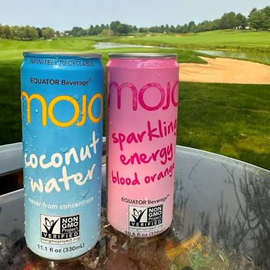
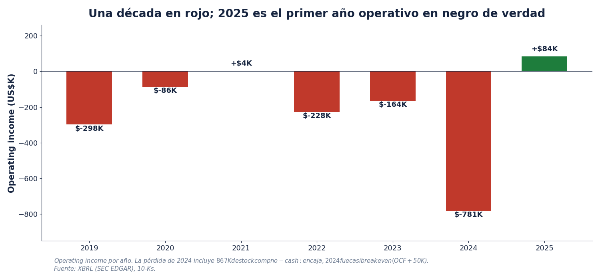
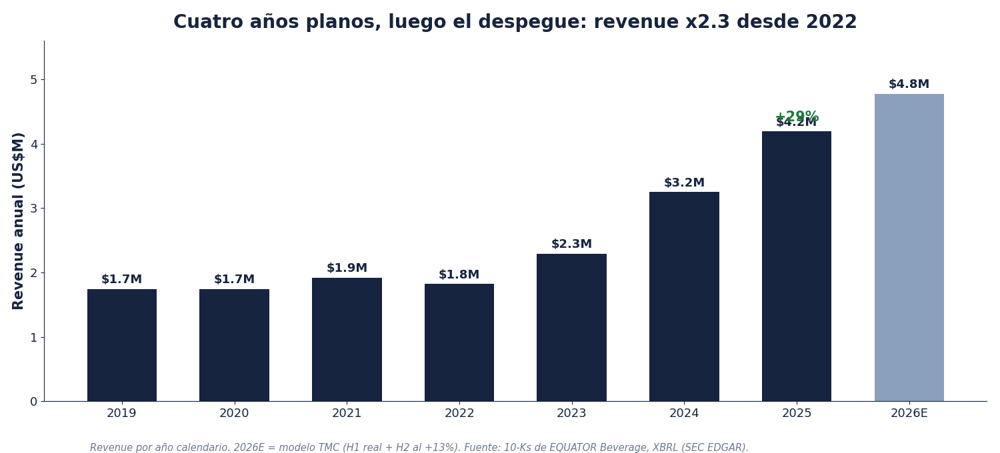
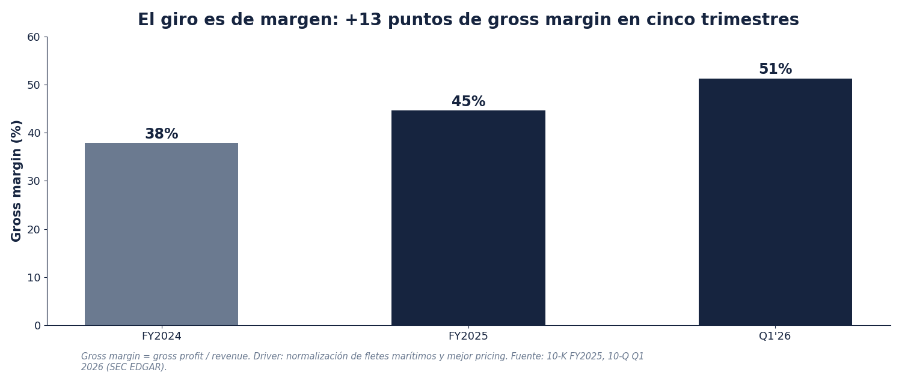
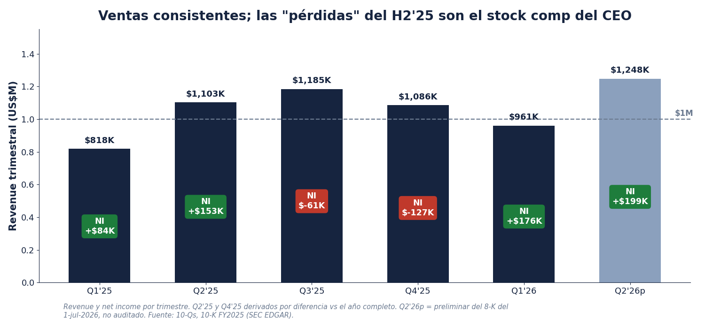
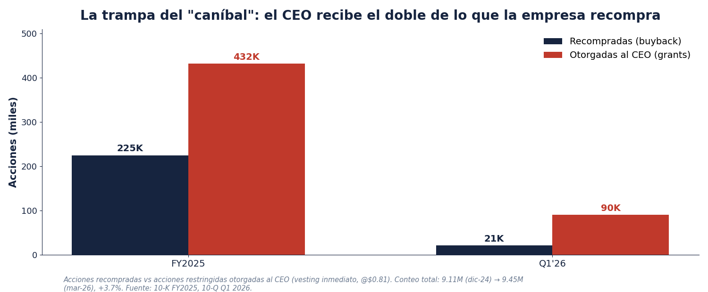

MOJO Coconut Water y Sparkling Energy Blood Orange, dos de las líneas de la marca.
La oportunidad, en una página
MOJO cotiza a $0.86 (cierre del 21-jul-2026), que a 9.45M de acciones es un market cap de $8.2M y un enterprise value de ~$8.3M. Es lo más chico que tengo en el portafolio y probablemente lo más chico que voy a tener: una nano-cap de pink sheets donde hay días enteros sin una sola operación. Eso es parte del riesgo y parte de la oportunidad, porque a este tamaño nadie la mira, y el precio se mueve por ruido, no por información.
Lo que compras por ese precio: una marca de bebidas funcionales de coco que vende más de 8 millones de unidades al año con dos empleados y cero activos fijos, que pasó de gross margin de 38% en 2024 a 45% en 2025 y 51% en el Q1 2026, que en 2025 tuvo su primer año con operating income positivo de verdad tras quemar $24.6M acumulados, y cuyo CEO tiene el 54% de la empresa y recompra acciones.
La empresa publicó resultados preliminares del Q2 2026 el 1 de julio (8-K en EDGAR), y son buenos: revenue récord de Q2 de $1.25M, +13%, y net income de $199K, +30%.
Esta es la segunda tesis que escribo de MOJO; la original la publiqué en Substack el 19 de noviembre de 2024, y hoy la empresa está más barata que entonces siendo mejor negocio. La otra cara: a 1.8x EV/Sales y ~44x utilidades TTM esto no está regalado en earnings; la tesis no es comprar utilidades baratas hoy, es un compounder lento de valor por acción con una opcionalidad de re-rating si aterriza un contrato de distribución mayor. Y hay algo que no me encanta con el management, y a este tamaño pesa tanto como los números: el CEO se otorga más acciones de las que la empresa recompra.
Snapshot
| Métrica | Valor | Nota |
|---|---|---|
| Precio (21-jul-2026) | $0.86 | +9% YTD; 52-sem $0.37 - $1.39 |
| Market cap / EV | ~$8.2M / ~$8.3M | 9,449,655 acciones; net debt $103K |
| Float | ~3.9M acciones (~$3.4M) | insiders 59.1% (CEO 53.9%, Controller 5.2%) |
| Revenue TTM | ~$4.5M | FY2025 $4.19M, +29% |
| Gross margin | 45% FY25 → 51% Q1'26 | 38% en FY2024; el giro es de margen |
| Net income | FY25 +$49K; H1'26 +$375K | H1'26 incluye $112K one-time de aranceles |
| EV/Sales TTM / P/E TTM | ~1.8x / ~44x | cara en earnings, la tesis es el re-rate |
| EPS FY26E / FY27E | $0.062 / $0.072 | modelo TMC |
| Balance | caja $127K, préstamo CEO $220K | sin deuda bancaria; cero PP&E |
| Próximo evento | 10-Q Q2 (~principios de agosto) | confirmar el preliminar del 1-jul |
1. ¿Qué hace la empresa?
EQUATOR Beverage desarrolla y distribuye bebidas funcionales premium bajo la marca MOJO: agua de coco, mezclas de coco con piña y con mango, agua de coco orgánica, sparkling y una línea de energía. Todo Non-GMO Project Verified y con certificación USDA Organic. Vende más de 8 millones de unidades al año en Norteamérica, el Caribe y Bermuda, a través de distribuidores, retail y e-commerce. Y lo digo con conocimiento de causa: el producto es buenísimo. Se lo he dado a probar a mucha gente y a todo mundo le ha encantado; eso no sale en los filings, pero en una marca de consumo es la mitad del juego.
La categoría también ayuda. El agua de coco viene creciendo a doble dígito en el mundo por todos los beneficios que trae: hidratación natural, electrolitos, poco azúcar, sin cosas raras en la etiqueta. En mi tesis original citaba proyecciones del mercado de agua de coco hacia ~$26B en 2030, creciendo ~17% anual. MOJO es una gota en esa ola, pero la ola va en la dirección correcta.
El modelo operativo es lo más interesante del negocio: dos empleados de tiempo completo. Dos. El embotellado lo hacen terceros, la logística la hacen terceros, y la empresa no tiene ni una planta ni un camión: el balance no trae un solo dólar de activos fijos, los activos totales son puro working capital. Es una marca y una hoja de cálculo. Eso significa capex cero, y significa que el operating cash flow es básicamente free cash flow.
Y un matiz que los números no capturan: detrás de la marca hay cultura de verdad. No es el experimento de un fondo ni una marca de laboratorio con presupuesto de celebrities; es un producto con certificaciones reales (Non-GMO, USDA Organic), una base de clientes que recompra desde hace años y un equipo que vive el negocio. Los números no son gigantes, pero la marca tiene raíces.
La contraparte de ese modelo es la concentración: 6 clientes son el 94% del revenue (91% en 2024) y el inventario viene de 2 proveedores. Aquí un matiz importante: esa concentración es completamente normal en una empresa de este tamaño; una marca chica entra al retail de cadena en cadena, y las primeras dos o tres se llevan casi todo el volumen por definición. Los filings no nombran a los clientes, pero por lo que sé uno de ellos es Sprouts Farmers Market (SFM), y en el retail del noreste la marca se ve en cadenas como ShopRite, Tops y Price Rite, además de e-commerce. Y como el coco se compra globalmente, el costo de flete marítimo y los aranceles son EL swing factor del margen, para bien y para mal: la década perdida fue en buena parte una historia de fletes.
2. La historia: $24.6M quemados para llegar aquí
La empresa viene de la era de los cascarones OTC (fue Mojo Ventures y Mojo Shopping antes de 2011), se volvió Mojo Organics en 2011 cuando entró Glenn Simpson como CEO, y se renombró EQUATOR Beverage en 2022. El déficit acumulado es de $24.6M contra $25.2M de capital histórico aportado: prácticamente cada dólar que los accionistas le han metido a esta empresa en su historia se quemó.
- Una década sin escala. De 2016 a 2022 el revenue vivió entre $1.3M y $1.9M, sin crecer, con pérdidas operativas casi todos los años.
- 2024, el peor año reciente: pérdida operativa de $781K. Aunque ojo con la letra chica: $867K de esa pérdida fue compensación en acciones no-cash; en caja el año fue casi breakeven (OCF +$50K).
- Reverse split 1:2 en octubre de 2025, para sostener el precio arriba de niveles de centavos.
- Y el detalle incómodo que no voy a maquillar: el CEO de hoy es el mismo que administró toda la década perdida. Simpson lleva en el puesto desde 2011. Lo que cambió no fue el jinete, fue el caballo: fletes normalizados y por fin algo de escala.

La serie completa de operating income sale del XBRL de la empresa en SEC EDGAR.
3. El CEO: media tesis
Esta no es mi primera tesis de MOJO. La original la publiqué en Substack el 19 de noviembre de 2024, con la empresa valiendo $11M de market cap y todavía sin un año rentable completo. Lo que ha pasado desde entonces le da la razón a la tesis y se la quita al precio: llegó el primer año rentable, el revenue siguió creciendo, las recompras continuaron... y el market cap bajó de $11M a $8.2M. Hoy está más barata que cuando publiqué la tesis original (~1.8x ventas contra ~3x de entonces) siendo un negocio objetivamente mejor. Eso casi nunca pasa, y cuando pasa suele ser por iliquidez, no por información.
Y el centro de esa tesis era, y sigue siendo, el CEO, que en esta historia pesa más que en ninguna otra de mi portafolio. Glenn Simpson se sabe el negocio de bebidas de memoria: fue VP/CFO de los embotelladores de Coca-Cola en Uzbekistán, donde el revenue pasó de $5M a $160M y se ganó dos veces el Bottler of the Year. CPA, MBA de Columbia, y dueño del 54% de la empresa (empezó con 5% y fue comprando). En las llamadas que he tenido con él se nota el conocimiento fino: habla de fletes, de anaqueles, de umbrales de escala y de por qué NO hacer cosas, que es lo más difícil de escuchar de un CEO de nano-cap. Hay cosas del management que no me encantan, y las detallo más adelante en la sección 11; las dos cosas son ciertas a la vez.
4. El giro: qué cambió en 2023-2025
- Escala, por fin. Revenue $1.82M (2022) → $2.29M (2023) → $3.25M (2024) → $4.19M (2025). Multiplicó x2.3 en tres años, +29% el último.
- Fletes. El costo de flete marítimo post-COVID se normalizó y el gross margin pasó de 38% (2024) a 45% (2025) y 51% en el Q1 2026. Este es el corazón del giro: el mismo negocio con flete caro pierde dinero y con flete normal lo gana.
- Disciplina de costos. El SG&A bajó -11% en 2025 mientras el revenue subía +29%. En una empresa de dos empleados el costo es una decisión, no una inercia.
- Resultado: primer año con operating income positivo de verdad (+$84K), net income de +$49K y operating cash flow de +$212K.
- Y capital allocation nuevo: recompraron 225,000 acciones en 2025 (~$240K) y la única deuda es un préstamo del propio CEO ($340K al 9.25%, ya abonado a $220K), en vez de la dilución tóxica típica de los pink sheets.


5. La tesis: tres pilares
Pilar 1: la rentabilidad ya no es promesa
2025 fue el primer año en negro de la era EQUATOR y el H1 2026 ya trae $375K de net income, 7.6 veces todo lo que ganó en 2025 completo. El preliminar del Q2 confirma la dirección: revenue récord de Q2 y cuatro de los últimos seis trimestres con utilidad. La consistencia de ventas también está: seis trimestres seguidos entre $0.96M y $1.25M, con el Q1 estacionalmente débil como único que baja de $1M.
Ahora los asteriscos, porque los hay y prefiero ponerlos yo antes de que me los ponga el mercado. Uno: el net income del Q1 2026 trae $112K de other income no recurrente (recuperación de aranceles reconocida tras el fallo de la Suprema Corte de febrero 2026 sobre las tarifas IEEPA); el operating income del trimestre fue $74K, -17% contra el año pasado, porque el SG&A cargó $73K de stock comp del CEO. Y dos: las pérdidas del H2 2025 (-$61K y -$127K) son en buena parte el grant de 432,000 acciones al CEO pegando en el estado de resultados, no deterioro del negocio. Limpio de ruido contable, este negocio hoy gana del orden de $100-150K por trimestre y creciendo.

El primer semestre, contra el mismo semestre del año pasado:
| Línea | H1 2026 | H1 2025 | Cambio |
|---|---|---|---|
| Revenue | $2,209,119 | $1,920,325 | +15% |
| Net income | $375,123 | $237,090 | +58% |
| Gross margin (Q1, único desglosado) | 51.3% | 39.2% | +12 pts |
| Operating cash flow | $93,590 | -$333,958 | +$427K |
Q2 2026 preliminar del 8-K del 1-jul-2026, no auditado. El historial obliga a decirlo: FY2025 preliminar $136,897 vs auditado $49,213, y Q1 2026 del PR $185,712 vs 10-Q $176,115. Uso siempre la cifra del filing.
Pilar 2: rentable a escala mínima, con el apalancamiento todavía por delante
Aquí voy a corregir algo que yo mismo daba por sentado. En este negocio, hoy, casi todo el costo es variable: el COGS es coco, lata y flete, y se mueve con cada unidad vendida. Lo único fijo de verdad es el SG&A cash de ~$1.4M, así que el apalancamiento operativo clásico que me gusta ver en mis empresas aquí todavía no existe. En mis llamadas con el CEO él me lo ha dicho con una claridad que se agradece: internalizar operaciones (gente, almacenes, distribución propia) empieza a hacer sentido alrededor de los $20M de ventas anuales, y ahí es donde el apalancamiento se empezaría a anotar. Estamos a más de 4x de distancia de ese número; no lo modelo ni lo pago.
Lo que sí existe hoy, y es más raro de lo que suena, es rentabilidad a escala mínima. La regla de la industria es brutal, como escribí en mi tesis original: cada año nacen casi 3,000 marcas de bebidas nuevas y al segundo año sobreviven 15-20. Ser rentable con $4M de ventas en el pasillo de bebidas es una anomalía, y no es suerte, es diseño: dos empleados, cero almacenes, cero flotilla, cero ego de infraestructura. El error típico de las marcas chicas, y esto también viene de mis conversaciones con Simpson, es enamorarse de su propia distribución: contratar gente, rentar almacenes enormes, comprar camiones, y morirse de costos fijos antes de tener el volumen que los pague. MOJO hace exactamente lo contrario, y la ambición del CEO es subirse a los camiones de Pepsi o de Coca-Cola, no comprar los suyos. Mi modelo a 2027 (~$690K de net income contra $49K en 2025) viene de gross margin y de SG&A quieto, no de apalancamiento; el apalancamiento es la opción que se abre en $20M.
Pilar 3: la historia por acción y la opcionalidad del re-rate
Aquí está el ángulo Micro Capo. El CEO tiene 53.9% y los insiders 59.1%, así que el float son ~3.9M de acciones, unos $3.4M a precio de hoy. La empresa ha recomprado 1,105,072 acciones desde 2018, como 10.5% del conteo actual, y sigue comprando sub-$1.05. En un float así de chico, cada recompra cuenta doble.
Y la opcionalidad: hoy cotiza a ~1.8x EV/Sales. El comentario de analistas que sigo le pone 4-6x si aterriza un contrato de distribución mayor, y el propio CEO habla de 7-10x eventual (él mismo lo llama "increíblemente agresivo", y yo también). No necesito creerle al CEO: con que el deal de distribución exista, el re-rate de 1.8x a 3-4x ya duplica la acción. Ese contrato no está en mi modelo; es el kicker gratis, como manda mi framework: si el retorno solo funciona incluyéndolo, no hay margen de seguridad.
6. El contexto: la industria, los múltiplos y por qué la distribución es todo
En bebidas, el producto casi nunca es el cuello de botella; la distribución sí. Es lo más difícil del negocio, y me lo ha repetido el propio CEO en llamadas: puedes tener la mejor lata del mundo, pero si no estás en el anaquel y en el camión correcto, no existes. Por eso el catalizador de esta tesis siempre ha sido el mismo: colgarse de un sistema de distribución grande (el sueño explícito de Simpson es que MOJO viaje en los camiones de Pepsi o de Coca-Cola) en lugar de construir el propio y morir en el intento, que es el final estándar de las marcas chicas.
Sobre los múltiplos: no existe "el múltiplo de bebidas". Es un barbell que depende de crecimiento y rentabilidad, no de la categoría. La foto de hoy (22-jul-2026):
| Empresa | Qué es | EV/Sales hoy | Nota |
|---|---|---|---|
| Vita Coco (COCO) | Líder de agua de coco, el comp directo | 6.3x | P/E 55x, GM 37%; rentable y creciendo |
| Celsius (CELH) | Energía funcional, $3.0B revenue | 2.5x | P/E 64x |
| Zevia (ZVIA) | Soda sin azúcar, $169M revenue | 0.6x | pierde dinero |
| Jones Soda (JSDA) | Craft soda, $34M revenue | 1.1x | pierde dinero |
| Reed's (REED) | Ginger beer, $31M revenue | 0.5x | pérdidas fuertes, OTC |
| MOJO | Agua de coco funcional, $4.5M revenue | 1.8x | rentable, creciendo 13-29% |
Múltiplos al 22-jul-2026 (stockanalysis.com). El claim del management de ser la única bebida no alcohólica OTC rentable de su categoría es de ellos; la tabla sugiere que al menos entre las listadas chicas, es verdad.
Y la pregunta que importa: ¿cuánto valían las grandes cuando eran del tamaño de MOJO? Celsius en 2011-2012 facturaba $8M y llegó a valer $4.8M de market cap, como 0.6x ventas, quemando dinero y abandonada; el re-rate a ~3.3x llegó hasta 2016 ($77M de cap sobre $23M de ventas), cuando el crecimiento aceleró y entró capital serio. Vita Coco, ya siendo la líder absoluta de la categoría, salió a bolsa en 2021 a ~2x ventas ($750M sobre ~$380M), y el 6.3x de hoy se lo ganó después con margen y utilidades. Super Coffee levantó capital a ~9x en el hype de 2021, sumando celebridades como J.Lo y Alex Rodriguez, y un año después ya andaba buscando capital a la mitad de la valuación original. Por otro lado, Coca-Cola pagó ~4x ventas por BodyArmor en 2021.
La lección es incómoda pero útil: nadie cobra 4-6x con $4M de ventas. Ese múltiplo se cobra con distribución nacional, crecimiento sostenido y utilidades visibles. A 1.8x, MOJO ya cotiza arriba de su clase de tamaño (las chicas que pierden dinero valen 0.5-1.1x) precisamente porque es rentable: el mercado ya le da crédito parcial por la inflexión. El resto del re-rate no se paga con narrativa, se paga con el contrato de distribución.
7. Los números y el modelo
Construí el modelo directo de los filings, con cada supuesto anclado en algo verificable, como siempre. H1 2026 real ($2.21M de revenue). Para el H2 asumo +13% contra el H2 2025 (la tasa a la que creció el Q2 preliminar), que da $2.57M y un FY2026 de ~$4.78M, +14%. Para 2027 asumo +15%, la mitad del CAGR 2023-2025 (+35%). Gross margin de 48.5% en 2026 y 48% en 2027, entre el 44.6% de FY25 y el 51.3% del Q1'26, porque el H2 carga más flete. SG&A de $1.75M y $1.85M. Tasa de impuestos de 10%: el deferred tax asset de $918K amortigua todavía un par de años.
| US$ | FY2024A | FY2025A | FY2026E | FY2027E |
|---|---|---|---|---|
| Revenue | $3.25M | $4.19M | $4.78M | $5.49M |
| Crecimiento | +42% | +29% | +14% | +15% |
| Gross margin | 37.9% | 44.6% | 48.5% | 48.0% |
| Net income | -$801K | +$49K | +$592K | +$689K |
| EPS diluido | -$0.09 | $0.01 | $0.062 | $0.072 |
FY2026E incluye el one-time de aranceles de $112K del Q1.
Dos límites del modelo que digo de frente. Uno: la empresa no da guidance de nada, así que las anclas son su propio histórico y el preliminar del Q2, no números que el management publique hacia adelante. Dos: con revenue transaccional puro (sin backlog, sin contratos), mi framework manda proyectar corto: por eso modelo a 2027 y no a 2030, y por eso el contrato de distribución queda fuera.
8. Valuación
Valúo por EV/Sales. Podría ponerle un múltiplo a las utilidades, pero en esta industria se modela por ventas, y lo que estoy esperando aquí es algo más especulativo: con un contrato de distribución todo puede subir muy rápido, y ese re-rate ocurre sobre el múltiplo de ventas, no sobre las utilidades del año. La foto de hoy: a $0.86 la acción cotiza a ~1.8x EV/Sales (y ~44x utilidades TTM, solo como referencia).
| Escenario | Rev 2027E | EV/Sales | Target | Upside | Prob. |
|---|---|---|---|---|---|
| Bear: el crecimiento se frena, GM cede | $4.6M | 0.8x | $0.38 | -56% | 20% |
| Base: sigue componiendo ~15%, rentable | $5.5M | 2.0x | $1.16 | +34% | 50% |
| Bull: aterriza distribución mayor | $7.0M | 4.0x | $2.95 | +242% | 30% |
| Ponderado 2027 (desde $0.86) | ~$1.54 | +78% |
Target = (revenue × EV/Sales - net debt) / 9.45M acciones. El bull de 4x es el rango bajo de lo que la industria paga por growers con distribución real (BodyArmor salió a ~4x); el base de 2x es donde han cotizado los growers rentables chicos.
Y un dato de color que va justo aquí: en una de mis llamadas, el CEO me comentó que esta debería ser una acción de $5. Obviamente no me va a decir lo contrario, pero suena muy convencido de que ahí es donde debería estar tradeando. Para dimensionarlo: $5 serían ~10x las ventas actuales, o ~4x unas ventas de $11-12M. Ese es el mapa mental del dueño; mi número es el ponderado de arriba.
Lectura del ponderado: ~$1.54 es +78% desde $0.86, con un bear de -56%. La asimetría ya se ve interesante para el tamaño de boleto que es esto, y el que manda es el bull: un contrato de distribución re-rate esto a más del doble, y esa lotería con el dueño del 54% alineado a cobrarla es la razón de fondo por la que la posición existe.
9. Checklist Micro Capo: 5.5 / 10
| Criterio | Nota | Comentario |
|---|---|---|
| Calidad del negocio | 5 | Marca de nicho real y modelo ultraligero, pero 6 clientes = 94%, 2 proveedores, y el flete manda en el margen |
| Management y alineación | 5 | 54% skin in the game, conocimiento del negocio y ejecución 2025 impecable; pero grants > recompras, 2 discrepancias sin explicar, parachute |
| Fuerza financiera | 6 | Rentable, OCF positivo, sin deuda bancaria; caja de $127K = cero colchón |
| Mecánica de multibagger | 7 | Float mínimo + re-rate 1.8x → 4-6x EV/Sales; el apalancamiento operativo se abre hasta ~$20M de ventas |
| Riesgo | 4 | Self-dealing del management, concentración, iliquidez extrema, escala mínima |
Clasificación: opcionalidad / situación especial. No es core y no debe serlo: es un boleto chico, bien entendido, con un dueño que puede hacerme ganar mucho dinero o quedarse él con la diferencia.
10. Catalizadores
- 10-Q del Q2 2026 (~principios de agosto). Confirmar el preliminar del 1-jul y ver el gross margin del semestre. Con el historial de revisiones de esta empresa, el filing es el único número que cuenta.
- Aranceles. La empresa pagó $122K de tarifas recíprocas en 2025 y ya reconoció $112K por recuperar tras el fallo de la Suprema Corte (sujeto a aprobación de la aduana); el repeal del 10% mundial que evalúan recuperar es viento de cola directo al gross margin 2026.
- El contrato de distribución mayor. EL catalizador. El plan explícito del CEO es colgarse de un sistema de distribución grande (Pepsi o Coca-Cola) sin subir su base de costos. Re-rate de 1.8x hacia 4-6x EV/Sales según los analistas que siguen el nombre. No está en mi modelo; si llega, es el doble o más.
- Recompras continuadas sub-$1. Con float de 3.9M acciones, cada 100K recompradas son 2.6% del float.
- FY2026 completo limpio: camino a ~$590K de net income contra $49K en 2025. El primer año donde la utilidad se ve sin lupa.
11. Riesgos
| Riesgo | Por qué importa |
|---|---|
| Self-dealing del management | El CEO se otorgó 522K acciones en cinco trimestres mientras la empresa recompraba 246K: la dilución neta es +3.7% pese al buyback. Sueldo + acciones ~$350K en una empresa de $4M de ventas, préstamo propio al 9.25%, y parachute de $650K + 1.8M acciones (19% del count) si lo corren sin causa. |
| Discrepancias en cifras | Dos veces seguidas el número preliminar no cuadró con el final (FY25: $137K → $49K; Q1'26: $186K → $176K), sin explicación del management. El preliminar del Q2 carga esa hipoteca de credibilidad. |
| Material weakness | La empresa declara controles internos no efectivos (segregación de funciones, sin supervisión contable técnica). A este tamaño es normal; sumado a lo anterior, incomoda. |
| Concentración | 6 clientes = 94% del revenue; 2 proveedores de inventario. Perder un cliente grande es perder un cuarto del negocio de un plumazo. |
| Caja mínima | $127K de caja. Un contenedor perdido, un cliente que paga tarde o un pedido grande que financiar, y hay estrés. El techo de 10M de acciones autorizadas (quedan ~550K) limita la dilución... y también cualquier raise de emergencia. |
| IRS | El 10-K menciona una disputa fiscal en curso con el IRS entre los factores de riesgo, sin cuantificar. En una empresa de este tamaño, cualquier cifra materializada duele. |
| Iliquidez extrema | Float de $3.4M, días sin volumen. Entrar es fácil comparado con salir: si la tesis se rompe, el mercado no me va a dar liquidez al precio que yo quiera. |
| Escala | Una empresa de $4M compitiendo en el pasillo de bebidas contra gigantes. La ventaja del nicho es real pero frágil; sin el deal de distribución, esto es un negocio bueno pero minúsculo para siempre. |

12. Por qué la tengo (y por qué quizá agregue)
Entré a un promedio de $1.33, y lo digo sin anestesia: compré cerca del pico del spike post-Q1. El error fue el precio de entrada y el timing, no la tesis; los fundamentales de entonces son los mismos de hoy, pero pagué la euforia de un print en un float donde la euforia cuesta 30% en un día.
Hoy va -34% y pesa como 1% del portafolio. Y aquí va una excepción a mi regla de promediar a la alza y no a la baja: en este caso probablemente sí agregue abajo. Esto es un boleto de lotería: pesa poquito, me gustaría meterle más, y aunque todavía no lo hago, tal vez en esta ocasión sí valga la pena comprar más a la baja, porque el crecimiento sigue ahí y el producto de verdad es buenísimo.
- Qué me haría jalar el gatillo del add: el 10-Q del Q2 confirmando el preliminar sin revisión material, gross margin del semestre arriba de 45%, y de preferencia un trimestre donde las recompras le ganen a los grants del CEO.
- Y si no funciona, tampoco pasa nada por el tamaño que tiene. El problema real aquí no es perder, es vender: con este float, salir movería el precio en mi contra y es difícil salir. Por eso el tamaño chico no es un accidente, es el diseño de la posición.
13. Conclusión
MOJO es un Micro Capo de libro en lo operativo: nicho real, modelo de dos empleados sin un dólar de capex, gross margin en expansión de 38% a 51%, primer año rentable tras una década en rojo, dueño con 54% y recompras activas en un float de $3.4M. Todo lo que busco en la parte del negocio, en miniatura extrema.
Y trae su letra chica del tamaño del float: el mismo dueño que recompra acciones con la mano izquierda se las otorga con la derecha, dos veces el número preliminar no cuadró con el auditado, y la caja es de $127K. A $0.86 mi ponderado es ~$1.54, +78%, y el que manda es el bull: el contrato de distribución que re-rate el múltiplo. No es mi empresa favorita del portafolio, pero estas historias chicas, rentables y con un dueño convencido luego terminan saliendo muy bien. La posición se queda chica por diseño y vigilada trimestre a trimestre, con el 10-Q de agosto como siguiente juez; y si el crecimiento sigue, probablemente el próximo movimiento sea comprar más abajo, no vender.
Fuentes
- Cifras de la empresa: 10-K FY2025 (SEC EDGAR, acc. 0001477932-26-001536, 23-mar-2026) · 10-Q Q1 2026 (acc. 0001575872-26-000313, 13-may-2026) · 8-K del 1-jul-2026 con Ex. 99.1 (preliminar Q2 2026, no auditado) · 10-Q Q3 2025 · series históricas de revenue y operating income vía XBRL (data.sec.gov, CIK 0001414953)
- Gobierno corporativo: 10-K FY2025 (ownership, compensación, employment agreement) · DEF 14C mar-2026 (charter amendado, consentimiento escrito del 59%)
- Precio y liquidez: precio de mercado del 21-jul-2026 ($0.86); 52-sem y YTD a la misma fecha
- Tesis original y acceso al management: "MOJO", The Micro Capo en Substack, 19-nov-2024 · llamadas propias con el CEO Glenn Simpson (distribución como cuello de botella, umbral de ~$20M de ventas para internalizar operaciones)
- Industria y comparables (al 22-jul-2026): múltiplos actuales de COCO, CELH, ZVIA, JSDA y REED (stockanalysis.com) · histórico de Celsius (macrotrends.net, marketcaphistory.com) · IPO de Vita Coco oct-2021 (stockanalysis.com) · BodyArmor/Coca-Cola $5.6B (CNBC, 1-nov-2021) · Super Coffee $500M y down round (Bloomberg ago-2021, Modern Retail)
- Terceros (señalados como tales en el texto): comentario de analistas sobre los resultados FY2025 y Q1 2026, incl. los rangos de re-rate de 4-6x EV/Sales y el 7-10x citado del CEO (archivo interno de research)
Aviso legal. El contenido de The Micro Capo es únicamente mi opinión personal con fines educativos, informativos y de entretenimiento. No constituye asesoría financiera, fiscal, legal, contable ni de inversión personalizada, ni es una recomendación de compra, venta o mantenimiento de ningún valor. Las inversiones en microcaps conllevan riesgos significativos, incluida la pérdida total del capital. Mantengo una posición larga en MOJO y puedo cambiarla sin previo aviso. Haz tu propia tarea y consulta con un asesor certificado antes de invertir.